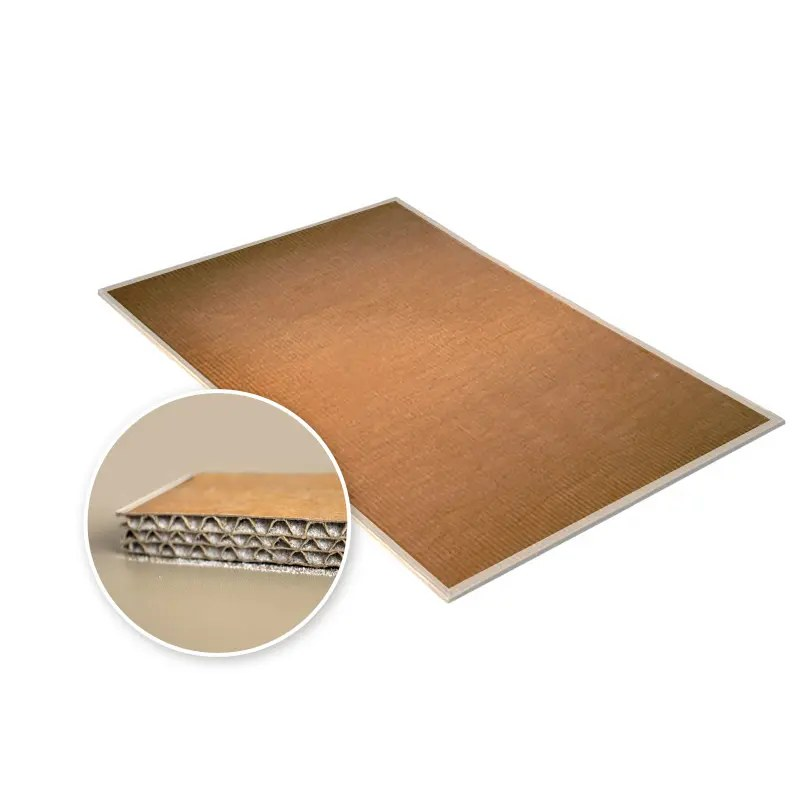
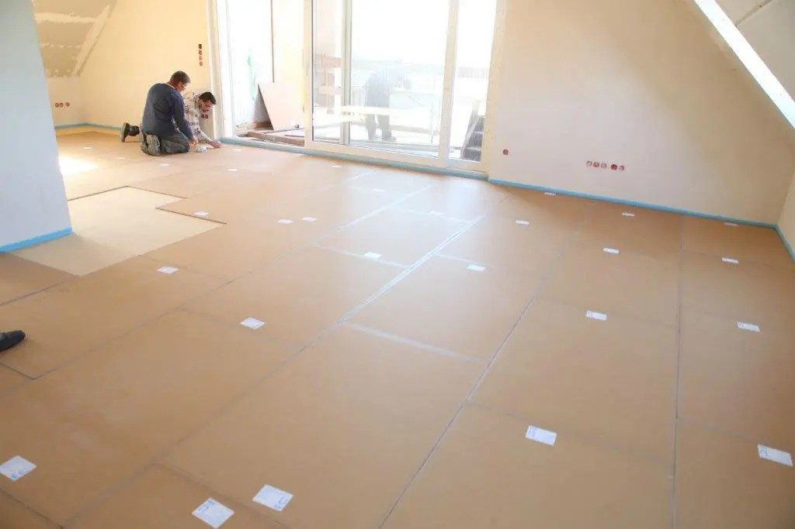
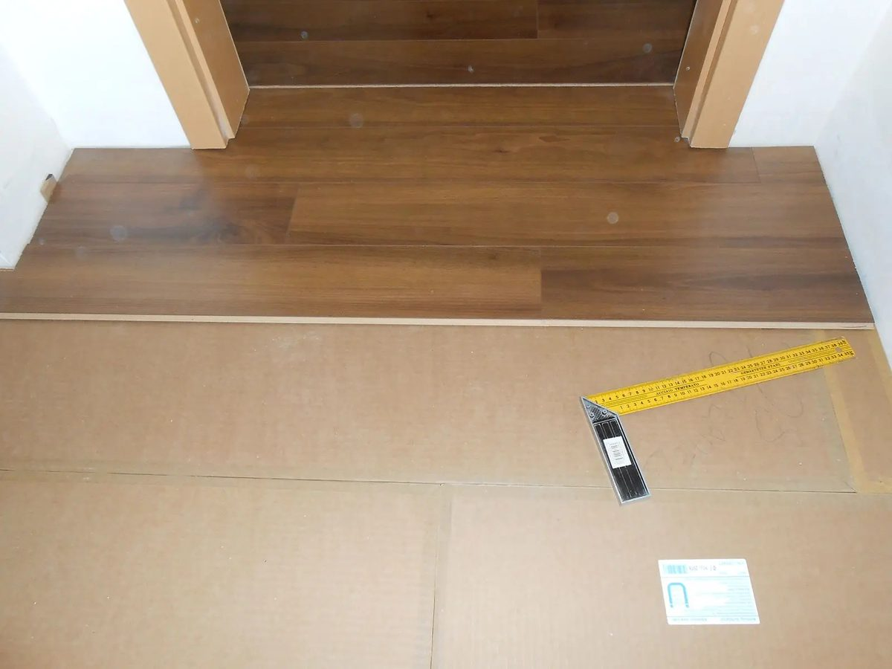
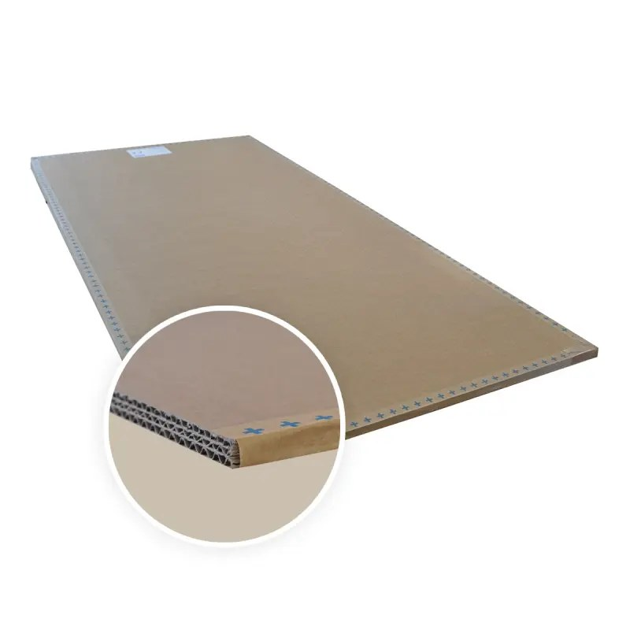
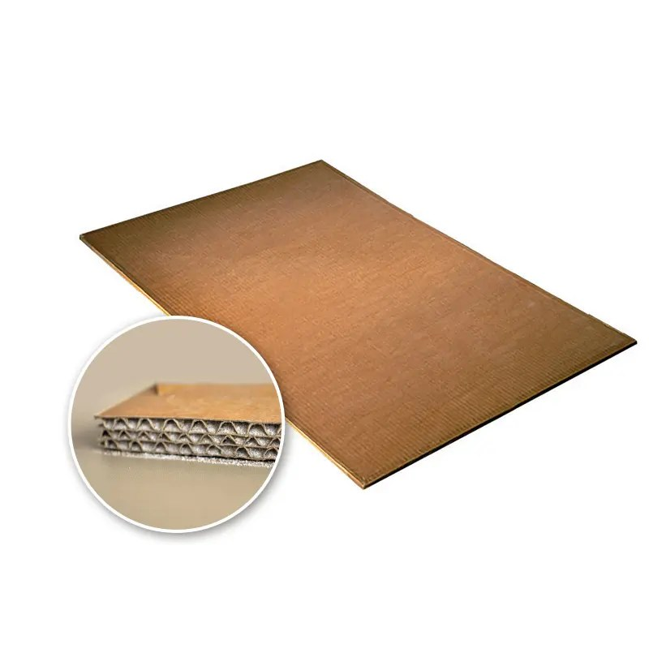
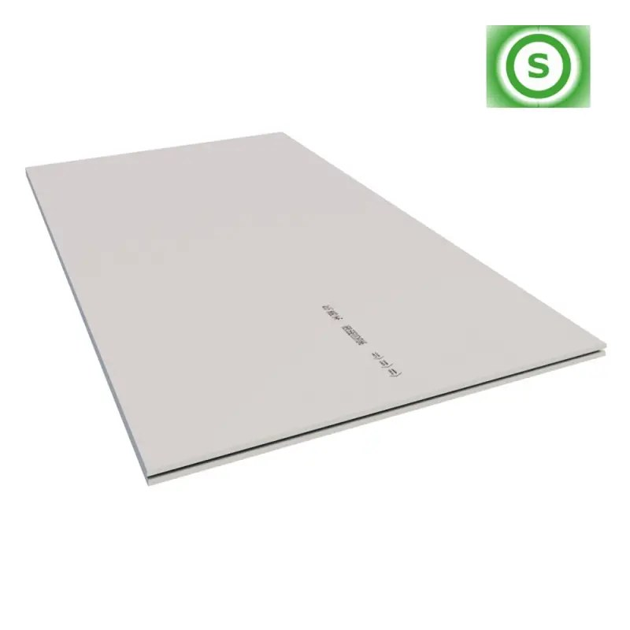

Nejnižší stavební výška
Jen 12,5 mm — nejtenčí varianta řady pro skladby s minimálním prostorem.



Tenčí varianta desky PhoneStar pro skladby s omezenou stavební výškou — nejčastěji do podlah, alternativně na stěny a stropy. Třívlnná překřížená konstrukce s pískovou výplní při tloušťce jen 12,5 mm. Materiál dodává CIUR a.s.
Patentovaná deska WOLF PhoneStar — univerzální řešení pro rekonstrukce i novostavby.
Jen 12,5 mm — nejtenčí varianta řady pro skladby s minimálním prostorem.
Nejčastěji volená varianta pro plovoucí podlahy s omezenou konstrukční výškou.
Deskový materiál, jednoduchá manipulace bez mokrých procesů.
Nejdostupnější varianta řady PhoneStar při zachování patentované konstrukce.


Nejprodávanější univerzální deska řady PhoneStar.
